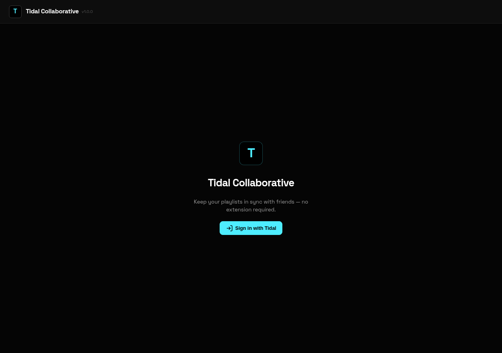

tidal-collaborative
node websocket sqlite docker v1.0.0
Self-hosted real-time collaborative Tidal playlist sync. Users sign into their Tidal accounts, link a playlist, and any track added or removed propagates automatically to every collaborator's own playlist.

how it works
Tidal doesn't offer any way to be notified the instant someone changes a playlist, so instead the server quietly checks each linked playlist every so often. When it spots a change, it writes down exactly what changed in a running log (a bit like a diary that's only ever added to, never edited), tells everyone's browser about it instantly, and then queues that same change up to be copied into every other collaborator's own playlist. Keeping a full log like this means that if someone's connection drops or the server restarts, nothing gets lost or duplicated — it can always pick up exactly where it left off, and the log doubles as a built-in activity history.
built with
A Node.js server that talks to browsers over a “WebSocket” — a permanently-open connection that lets the server push updates to your screen instantly, instead of your browser having to keep asking “anything new?”. All the playlist data lives in SQLite, a lightweight database that's just a single file rather than a separate server to run. Signing in uses Tidal's own official login flow, so this app never sees or stores your password — and the access it is given is scrambled (encrypted) before being saved, so even someone who got hold of the database file couldn't use it to access anyone's account. It's packaged with Docker, a way of bundling an app so it runs identically on any computer, and comes with a guided first-time setup. Released as version 1.0.0.